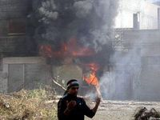
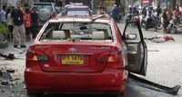
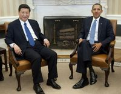
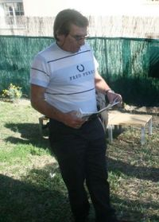
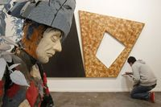
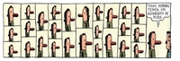

La economía de la eurozona cayó un 0,3% en el cuarto trimestre de 2011
Wed, 15 Feb 2012 08:55:00 +0100
El estancamiento económico derivado de la crisis de deuda y los duros planes de ajuste contra el déficit adoptados en algunas de sus principales economías han devuelto a la eurozona a tasas negativas de crecimiento en el último trimestre de 2011, algo que no ocurría desde 2009. Según ha informado hoy Eurostat, la oficina estadística europea, el Producto Interior Bruto (PIB) de la los 17 países que comparten la moneda única cayó un 0,3% entre octubre y diciembre con respecto al trimestre anterior. El de la UE, por su parte, también retrocedió otro 0,3%. Con esta recaída, Europa se asoma a su segunda recesión en menos de tres años.
Rajoy admite que sus reformas no se notarán a corto plazo
Wed, 15 Feb 2012 09:48:00 +0100
Curarse en salud y rebajar expectativas y prisas. El presidente del Gobierno, Mariano Rajoy, ha advertido de que las medidas que adopte no tendrán efectos "en el corto plazo por la situación económica internacional y, especialmente, europea".

Al menos 200 muertos en un incendio en una cárcel hondureña
Wed, 15 Feb 2012 01:33:00 +0100
Un número aún indeterminado de personas, que diversas fuentes sitúan por encima de los 200, han muerto en un incendio registrado en la Granja Penal de Comayagua, región central de Honduras, informó a Efe este miércoles una fuente oficial. "El dato preliminar que tenemos es que unas 100 personas habrían muerto calcinadas y por asfixia, pero no es posible por ahora confirmar una cifra", indicó el portavoz del Cuerpo de Bomberos de la ciudad de Comayagua, sargento Josué García de madrugada. Servicios forenses citados por la agencia Reuters sitúan la cifra en 272 muertos.
El régimen sirio amplía su ofensiva a Hama antes del voto en la ONU
Wed, 15 Feb 2012 07:55:00 +0100
Las fuerzas del régimen de Bachar el Asad han empezado esta mañana a bombardear varios barrios de la ciudad siria de Hama, según denuncian varios activistas. Tanques desplegados en las afueras de la ciudad han comenzado a disparar de madrugada, mientras unidades militares avanzaban desde el aeropuerto hacia el centro de la ciudad. Los activistas de oposición y los rebeldes alzados en armas aseguran que los soldados disparan desde vehículos blindados y emplean piezas de artillería antiaérea. Pocas horas después, uniformados de la Cuarta División del Ejército, comandada por Maher el Asad, hermano del presidente, irrumpía en el barrio de Barzeh de Damasco para montar controles y lanzar una redada en la que se ha detenido a varias personas en sus viviendas, según relatan algunos vecinos a Reuters. Nunca en 11 meses de revuelta popular los soldados se habían desplegado en un distrito tan céntrico de la capital.

Electricidad, tabaco y telefonía moderan el IPC de enero al 2%
Wed, 15 Feb 2012 09:46:00 +0100
El IPC de enero, que acaba de publicar el Instituto Nacional de Estadística, confirma lo que ya anticipó el indicador adelantado hace dos semanas. El año arrancó con un enfriamiento notable de la inflación, que se quedó, en la comparación interanual, en el 2%, el nivel más bajo en 16 meses. En noviembre, apenas un trimestre atrás, el incremento bordeaba el 3%. La nítida moderación de precios debe tanto al nuevo retroceso del consumo privado, como a decisiones sobre impuestos y tarifas o a la competencia en la oferta de servicios telefónicos.
Tailandia acusa a tres iraníes del atentado frustrado en Bangkok
Wed, 15 Feb 2012 09:12:00 +0100
Un día después de las misteriosas explosiones en Bagkok en las que resultó gravemente herido un supuesto terrorista iraní, diversas voces desde Tailandia apuntan a confirmar las sospechas del Gobierno israelí de que el suceso es en realidad un atentado fallido contra sus intereses en el país asiático. El ministro de Exteriores anunció que dos ciudadanos iraníes han sido detenidos por "haber causado una explosión ilegal" contra miembros de la policía. El ministro, Surapong Tovichakchaikul, rechazó hablar abiertamente aún de "terrorismo".

Urdangarin discutió la orden del Rey de dejar sus cargos en Nóos
Tue, 14 Feb 2012 11:31:00 +0100
Iñaki Urdangarin, esposo de la infanta Cristina e imputado por fraude a la Administración y malversación de caudales públicos, discutió en Barcelona en el verano de 2006 con el emisario que le envió el Rey, José Manuel Romero, conde de Fontao, sobre la necesidad y oportunidad de renunciar a sus cargos en la cúpula de la trama de Nóos, y en especial tener que dejar la presidencia del patronato de la fundación Areté.
Argentina alude a la crisis española en su pugna con los sindicatos
Tue, 14 Feb 2012 09:29:00 +0100
Resultó más barato ver el pasado 18 de enero al Real Madrid y al Barcelona en el estadio Santiago Bernabéu -90 euros de media- que ver en Argentina a la semana siguiente un simple partido amistoso entre River y Boca. Cualquier apartamento de cien metros cuadrados en los barrios más seguros de Buenos Aires ronda los 2.000 euros. Las tarifas de taxis porteños subieron un 26% en noviembre, el billete de metro se encareció en enero un 127%, una lata de medio litro de aceite de oliva marca Carrefour cuesta 4,7 euros en el centro de Buenos Aires, un litro de Coca-Cola Zero, 1,6 euros. Un frigorífico que el año pasado podía costar unos 870 euros ahora vale 1.200. Los salarios no son tan altos como en España, pero el precio de muchos productos, sí. Y sin embargo, Argentina va bien. Al menos, va lo suficientemente bien como para que los sindicatos amenacen con huelgas si no se les suben los salarios más de un 25%. El Gobierno, en principio, solo pretende subirlos un 18%.
Mas elogia la responsabilidad del PP al permitir aprobar las cuentas
Wed, 15 Feb 2012 11:40:00 +0100
El presidente de la Generalitat, Artur Mas, ha defendido con vehemencia esta mañana sus pactos con el Partido Popular, ha alabado la responsabilidad de esta formación y ha augurado que esta actitud tendrá recompensa en la sociedad. La líder del PP catalán, Alicia Sánchez-Camacho le ha exigido, sin éxito, en el pleno del Parlament que reconozca que CiU ha elegido a los populares como socios de largo recorrido. Mas, sin embargo, ha evitado entrar en el juego y se ha limitado ensalzar la actitud responsable del PP.

Acusan al abogado de Correa de redactar el fallo de 'El Universo'
Wed, 15 Feb 2012 06:53:00 +0100
En la ofensiva del presidente ecuatoriano Rafael Correa contra los medios críticos, la jornada de hoy es crucial. Está prevista la audiencia final del caso El Universo, que fue suspendida en dos ocasiones. Las veces anteriores, el presidente Correa acudió ante el máximo tribunal acompañado de varios de sus ministros y buen número de simpatizantes; un escenario que es muy probable que se repita hoy.

La Vía Láctea tiene una misteriosa neblina de microondas
Tue, 14 Feb 2012 08:37:00 +0100
La Vía Láctea, un conjunto de entre 200.000 y 400.000 millones de estrellas, incluido el Sol, tiene una misteriosa neblina, una emisión difusa en microondas, en la región que rodea su parte central. Los científicos lo han visto con el observatorio espacial Planck, pero todavía no encuentran una explicación del fenómeno. El telescopio, además, ha proporcionado ya otros avances, como el primer mapa de todo el cielo del monóxido de carbono, gas frío asociado a nubes moleculares en las que se forman nuevas estrellas.
Artistas callejeros, en Arco con EL PAÍS
Mon, 13 Feb 2012 01:52:00 +0100
Lo bueno de la calle es que es libre. Las reglas las pones tú. El público suele ser receptivo. Nos interesa esa respuesta inmediata, asegura 3ttman el grafittero francés radicado en Madrid. Una afirmación que se podrá ver y contrastar esta semana a través del stand de EL PAÍS en Arco, donde participa él y otros cinco artistas, así como en el debate que ha organizado este periódico sobre Arte urbano.
Un joven minero reanima a los artistas
Tue, 14 Feb 2012 23:11:00 +0100
Un joven minero chileno dispuesto a ser una celebridad reanimó al artístico Barça en Leverkusen. A veces, los mejores equipos, aquellos que se distinguen por su juego de salón, precisan de un futbolista diferente, capaz de cambiar dinámicas negativas. Nadie duda de la calidad del Barcelona. La mayoría de sus futbolistas son una celebridad. Ahora, sin embargo, andan preocupados desde que quedaran descolgados de la Liga. No es extraño por tanto que ayer jugaran con cautela y muy responsabilizados. Necesitan reencontrar al famoso Messi. Mientras, los partidos pasan y se requieren valientes como Alexis.
TVE recorta los viajes de locutores a la 'Champions'
Tue, 14 Feb 2012 08:06:00 +0100
Las primeras medidas de ahorro en Televisión Española están ya en marcha. Los comentaristas deportivos no retransmitirán los partidos de fútbol a pie de campo cuando se celebren en el extranjero sino que lo harán desde los estudios de Torrespaña. El Barcelona disputa hoy el encuentro de ida de los octavos de final contra el Bayer Leverkusen, pero TVE no se ha desplazado a Alemania. El narrador habitual de la Liga de Campeones, Sergio Sauca, seguirá el partido por televisión y lo comentará desde Madrid.
Lin, un héroe sin límites
Wed, 15 Feb 2012 09:05:00 +0100
La epopeya de Jeremy Lin, el jugador de origen taiwanés al que hace apenas dos semanas nadie conocía, no parece tener límites. En Toronto decidió el partido con un último tiro, un triple, a nueve décimas para el final (87-90). No fue una acción aislada, sino la culminación de otra grandiosa actuación de este base que ha revolucionado a los Knicks, a Nueva York y a todos cuantos siguen la NBA.
El mismo Clemente de siempre
Tue, 14 Feb 2012 20:51:00 +0100
En la larga trayectoria de Javier Clemente en los banquillos de medio mundo hay muchos antes y muchos después. Hay un antes de su debut como técnico del Athletic que se corresponde con la lesión que segó su vida como futbolista y hay un después por la forma más traumática con la que quizá un entrenador ha dejado un banquillo, con una crisis social descomunal. Nunca en Bilbao tanto éxito (dos Ligas, una Copa y una Supercopa) fue seguido de tanta polémica, repetida en el Espanyol, en el que el éxito del subcampeonato en la Copa de la UEFA resultó no menos discutido.
EE UU lee en español
Tue, 14 Feb 2012 09:22:00 +0100
No faltaba demanda de libros en español en Estados Unidos, pero la oferta durante décadas estuvo poco organizada. Los resultados del censo en el año 2000 arrojaron una cifra cercana a 35 millones de hispanos y la prensa especializada empezó a hablar de una masa crítica de público lector español. Los grupos editoriales no tardaron en reaccionar y a veteranos como Arte Pública Press (editorial bilingüe) y Santillana USA (ahora Prisa Ediciones), se unieron sellos como Rayo de Harper Collins en 2001. Además, el sello Vintage de Random House reforzó su oferta cerrado un acuerdo con Mondadori en España. Distribuidoras y librerías ampliaron el espacio dedicado a estos libros.
Corea, misterios literarios de una península
Tue, 14 Feb 2012 06:09:00 +0100
En una sociedad como la coreana, dinámica y a la vez amordazada por imperativos de eficacia, competitividad, hipertecnología y confucionismo, los artistas son testigos voraces. Así como Ozu y Kawabata matizaron un Japón que ya no existe, hoy los artistas coreanos documentan la marcha vertiginosa hacia un futuro que nadie tiene tiempo de descifrar. En pocas palabras: los cambios que el país experimentó en los últimos años están grabados en su cine y en su literatura. Nadie más tuvo tiempo o paciencia de registrarlos. El artista aquí tiene una capacidad de indagación sociológica tan aguda que el mundo no tardó en detectar un foco de originalidad en Corea. Pocas veces sucede que el cine o la literatura logre retratar sin anacronismos los procesos sociales de un país y que genere una estética nueva, nada complaciente con el asunto que se proponen abordar. El cine fue el mascarón de proa para la nueva ola coreana: Kim Ki-duk, Hong Sang-soo, Boon Joon-ho, Im Sang-soo y Lee Chang-dong. Un cine que además de poblar festivales, propuso un imaginario oriental distinto al que conocíamos a través de China y Japón.
Arantxa: "Mis padres me anularon en muchos momentos"
Tue, 14 Feb 2012 12:52:00 +0100
Más de 80 periodistas se han congregado esta mañana en la sala de actos de la Casa del Libro de Rambla Catalunya de Barcelona para asistir a la presentación del libro Vamos en el que Arantxa Sánchez Vicario denuncia el maltrato psicológico y el expolio económico a que fue sometida por sus padres durante su carrera profesional. Arantxa ha llegado en loor de multitudes y se ha sentado, evidenciando cierta dosis de tensión, en la mesa presidencial. La mejor jugadora de la historia del tenis español, ahora con 40 años, ha estado arropada por su marido, Pep Santacana, un grupo de amigos y su ex colaboradora, Elvira Vázquez, sentados todos en las primeras filas.
El Gobierno desoye a la UE y presentará las cuentas en marzo
Wed, 15 Feb 2012 11:54:00 +0100
El Gobierno rechazó hoy de plano la presión de Bruselas para que acelere los Prespupuestos de este año.
¿Un Gobierno que hace oposición?
Wed, 15 Feb 2012 11:05:00 +0100
Si no fuera porque están sentados en la bancada azul del Congreso, la del Gobierno, esta mañana los ministros del PP parecían diputados de la oposición. En todas las respuestas de los ministros del PP a las preguntas de la sesión de control al Ejecutivo figuraba una crítica a la gestión del expresidente José Luis Rodríguez Zapatero. Y eso pese a que Rajoy aseguró en el debate de investidura que no existía la herencia a beneficio de inventario.
Fernández: "ETA no es solo un problema policial, también político"
Wed, 15 Feb 2012 01:11:00 +0100
Tensa sesión parlamentaria en la que los diputados han seguido con un llamativo silencio el cruce entre el ministro del Interior, Jorge Fernández Díaz, y la líder de UPyD, Rosa Díez, a cuenta de la ilegalización de Amaiur. UPyD, con un discurso durísimo, ha llegado a acusar al Ejecutivo del PP de cobardía por no querer instar a la ilegalización de esta formación. Los diputados de Amaiur, que no podían intervenir se trata de una interpelación- seguían en silencio y cabeceando la intervención de Díez.
Viaje al corazón del conflicto sirio: con los desertores
Wed, 15 Feb 2012 11:37:00 +0100
"Bab Amro es un Estado dentro del Estado". B., el soldado que habla, es un hombre guapo, de rostro fino y expresivo y ojos brillantes, iluminados tanto por su fe como por el ayuno que respeta desde que se unió al Ejército Libre de Siria (ELS), en diciembre. No es un desertor, como la mayoría de sus camaradas, sino un civil de Alepo que, escandalizado por los crímenes del régimen, decidió empuñar las armas. Su frase, desde luego, es anterior al 4 de febrero, el día en el que el Ejército sirio (Jaysh-e-Assadi, lo llaman sus adversarios, el Ejército de los Asad) emprendió un bombardeo intensivo de la zona, que causó varios centenares de muertos. Hasta entonces, se consideraba que Bab Amro era un "barrio liberado".
Rajoy y Rubalcaba abordan hoy la renovación del Constitucional
Wed, 15 Feb 2012 06:58:00 +0100
Primera cita en la Moncloa para Mariano Rajoy y Alfredo Pérez Rubalcaba. La primera que celebran el primero como presidente del Gobierno y el segundo como secretario general del PSOE. En el encuentro está previsto que aborden temas de calado, como la renovación de los órganos constitucionales y las reformas económicas emprendidas por el Ejecutivo.
Bankia pagará 2,9 millones por la quiebra de Lehman Brothers
Wed, 15 Feb 2012 10:40:00 +0100
Bankia está ultimando un acuerdo con algunos perjudicados por la quiebra de Lehman Brothers por el que la entidad presidida por Rodrigo Rato está dispuesta a asumir un pago de 3,8 millones de dólares (2,9 millones de euros) para evitar una demanda. Caja Madrid, hoy integrada en Bankia, actuó como aseguradora de emisiones de Lehman y fue demandada junto con otras entidades por no haber comprobado lo suficiente que la información financiera que presentaba Lehman era veraz. El acuerdo que se ultima es de todas las entidades.
EE UU recuerda a China sus responsabilidades como potencia
Tue, 14 Feb 2012 08:08:00 +0100
En su encuentro con el hombre destinado a dirigir los destinos de China en la próxima década, que probablemente será la de la confirmación de su ascenso al primer plano mundial, Barack Obama recordó al vicepresidente Xi Jinping que su país está obligado a jugar con las mismas reglas que el resto, tanto en lo que se refiere a la competencia económica como al cumplimiento de los derechos humanos y otras responsabilidades internacionales.

La ley coloca a un excargo del PP al frente del juzgado de la red Gürtel
Wed, 15 Feb 2012 09:25:00 +0100
La condena de Baltasar Garzón a 11 años de inhabilitación abre una nueva batalla en la Audiencia Nacional. Se trata de determinar quién ocupará el juzgado Central de Instrucción 5, el destino del juez durante los últimos 24 años y que, durante su suspensión, ha sido ocupado por Pablo Ruz. El mejor situado, según fuentes de la Audiencia, es Eloy Velasco, su compañero del juzgado 6. Velasco fue ocho años director general de Justicia de la Comunidad Valenciana en los gobiernos de Eduardo Zaplana y Francisco Camps, ambos del PP. Ahora tendrá que lidiar con la mayor trama de corrupción que afecta a ese partido, el caso Gürtel.
El capital riesgo cuida de su salud
Tue, 14 Feb 2012 07:56:00 +0100
La Comunidad Valenciana es la autonomía que más lejos ha llegado en la cesión de parcelas de la sanidad pública al sector privado. Mientras Madrid, Canarias o Castilla-La Mancha siguen sus pasos, el territorio valenciano puede seguir marcando distancias con una circunstancia novedosa en toda España. Una empresa perteneciente a un fondo de capital riesgo se dispone a gestionar la atención pública integral (desde los centros de salud a los hospitales) de un 20% de su población.
Plantas, animales y microbios son también recursos renovables
Tue, 14 Feb 2012 08:20:00 +0100
Desde las botellas biodegradables de agua o refrescos hechas a base de almidón de maíz, a las bolsas del supermercado hechas de patata o las algas marinas convertidas en delicias culinarias, las alternativas desarrolladas por la química y la biología a las materias primas tradicionales han entrado ya en la industria y en la vida diaria de la gente. Nuevos productos y procesos igualmente alternativos están todavía en los laboratorios de los científicos, pero es de esperar que, al menos una parte importante de ellos, lleguen al mercado antes o después. Dieta vegetariana para los peces de acuicultura, nuevas estructuras moleculares de los polímeros que optimicen su desintegración inocua, procesos microbianos optimizados para purificar el agua o procesos industriales que reduzcan las emisiones de CO2, son algunas ideas. Como dice el experto de la Comisión Europea Christian Patermann, las plantas, los animales y los microbios están ahí, en todas partes, y son recursos biológicos renovables.
El preso más antiguo de España sale de prisión
Wed, 15 Feb 2012 09:48:00 +0100
"Las palabras después porque ahora no puedo. Lo voy a hacer, pero ahora estoy atragantado. Os quiero a todos. Estoy flipando. Me tenéis asustado. Me siento libre". Han sido sus primeras expresiones fuera de la cárcel, donde Miguel Montes Neiro ha pasado más de 30 años encadenando condenas, aunque ninguna de ellas por delitos de sangre. "Ahora empieza mi primera oportunidad", ha dicho.

Arco busca eslogan
Tue, 14 Feb 2012 09:55:00 +0100
Los eslóganes se abrían paso anoche entre las escaleras de tijera, los palés de obra y los rollos de embalar en un Arco en pleno montaje que abre hoy sus puertas a coleccionistas y prensa. "La eterna vigilancia es el precio de la libertad". "No hay trabajo. No hay futuro. No hay miedo". "Sé papi". "La crisis es estética". "Dejémonos de juegos, pongámonos serios". Las exhortaciones y la abundancia de banderas (descoloridas, europeas y hasta hechas de trapos) sirvieron de llamativo reclamo en una feria que dejó la impresión (temprana, eso sí) de preseguir la sutileza con desiguales resultados.

Mikel Arteta: "Jugamos como en La Masia"
Tue, 14 Feb 2012 20:35:00 +0100
Para Mikel Arteta (San Sebastián, 1982) el balón siempre fue una prioridad, una pasión irrefrenable. Por eso, de niño, cuando jugaba partidillos en la playa de La Concha, se desfondaba de tal manera que, cuando llegaba a los entrenamientos del Antiguoko, acababa por vomitar del esfuerzo. De eso ha pasado mucho tiempo, tanto que sus pies se han hecho famosos en Francia, Escocia e Inglaterra, aunque en España no tiene ese reconocimiento. Pero ahora, bajo la batuta de Arsène Wenger, es el faro del Arsenal, equipo que discute hoy al Milan (20.45, televisiones autonómicas) y en San Siro, en la ida del duelo, una plaza para los cuartos de final de la Liga de Campeones.
El Sevilla reta a la FIFA a través de su camiseta
Tue, 14 Feb 2012 21:07:00 +0100
A pesar de que tanto la Federación Española de Fútbol como la FIFA prohíben cualquier clase de mensaje, lema o leyenda de carácter religioso, político o personal en las camisetas de los jugadores, el Sevilla entiende que la frase liberté, égalité..., superioridad! con la que el pasado lunes saltó el equipo al estadio de Anoeta no infringe norma alguna.
La crisis trunca el sueño olímpico de Roma
Tue, 14 Feb 2012 17:34:00 +0100
La economía de Italia no está para juegos, y mucho menos Olímpicos. El primer ministro Mario Monti ha cortado de un tajo las escasas posibilidades que tenía Roma de competir con otras cinco ciudades -entre ellas Madrid- por la organización de los Juegos Olímpicos de 2020. Ante la decepción del alcalde Gianni Alemanno, el jefe del Gobierno ha sido categórico: "El Comité Olímpico Internacional (COI) pide una carta a cada jefe de Gobierno en la que debe asumir un compromiso de garantía financiera, comprometerse a cubrir cualquier eventual déficit. Hemos reflexionado y hemos llegado por unanimidad a la conclusión de que no sería posible asumir ese compromiso". Por si a alguien le quedara aún alguna duda, Monti ha añadido una frase que es en sí un doble cerrojo a cualquier esperanza: "Italia está atravesando una grave crisis y no puede permitirse distracciones o riesgos económicos".
Haacke lleva la burbuja inmobiliaria al museo
Tue, 14 Feb 2012 09:43:00 +0100
Detrás de la obra de arte está el artista. También el galerista. El director de museo. Y el comisario. Y el patrono de la fundación del museo. Y el accionista de la galería. Y el intermediario. Y el director de una feria de arte contemporáneo. Y el alcalde que inaugura ufano la exposición del artista. Y los amigos del alcalde. Y el consejero delegado de la empresa que patrocina la exposición. Y esto es un entramado que el público no suele conocer, ni tiene por qué conocer si lo que persigue es solo obtener placer con el arte. Aunque hay quienes opinan que el arte, además de al placer, puede llevar a la reflexión, incluso a la indignación. Gente curiosa a la que le va la marcha y quiere saberlo todo: cómo, cuándo, dónde, por qué y gracias a quién se cuecen las cosas en torno a las obras de arte y su exposición pública, en torno a las obras de arte y su relación con el poder. Para esa fauna ávida de información, Hans Haacke es el hombre.
Vida y obra de Liniers
Tue, 14 Feb 2012 01:47:00 +0100
¿Qué surge antes, el dibujo o el texto? La respuesta a las historias de Liniers quizás pueda encontrarse en sus propias viñetas. Cuando habla de sí mismo, el dibujante se trasforma en un conejo. En una de las viñetas, incluida en Macanudo número 7, que acaba de editar Reservoir books, su personaje, todo orejas y gafas, trabaja en un folio, oculto en una esquina. El texto sugiere que dibuja sin pensar y entra en imagen uno de sus simpáticos duendes. De su gorro de rayas y pompa, cuelga otro espíritu fantástico y otro y otro más, así hasta salirse de la viñeta. O sea que primero dibuja y después piensa. El recuadro se cierra con otra imagen del conejo pensando: ¿Y esto? ¿cómo hago un chiste con esto?. No hace falta ni más argumento ni nuevas palabras. Historia concluida. Verdad, oportunidad, sugerencia, inspiración Cada viñeta de Liniers sugiere un estado de humor diferente. Y los encuentra de todo tipo: puede ser tierno, sagaz, irónico, inteligente, abstracto, lineal. Su vida personal y sus propias vivencias forman parte de su trabajo. Cualquier anécdota vale para sacarle punta. Así, de su experiencia con el músico Kevin Johansen, con el que realizó una gira, en la que iba dibujando lo que le sugerían sus canciones y sus imágenes se proyectaban en una pantalla, surge una curiosa anécdota del día en que el músico le pidió que invirtieran los papeles.

El nido de África
Fri, 10 Feb 2012 07:00:00 +0100
Los elefantes avanzaban directamente hacia nosotros. Abría el paso una hembra, una pequeña cría correteaba entre las moles grises de los otros adultos, y cerraba el grupo un macho enorme. Se apagaron los motores de los camiones y se hizo el silencio en la sabana. Ahora solo se oía el viento y, sobre él, el ruido sordo de las pisadas y del batir pausado de las amplias orejas. Antes de cruzar la pista, el macho se detuvo. Nos miró. Levantó su inmensa cabeza, inclinó el corpachón hacia delante y dejó bien claro que nos convenía quedarnos aún más quietos de lo que ya estábamos. Después, los elefantes continuaron la marcha como si no estuviéramos, con la elegante arrogancia que solo pueden mostrar los más grandes.
Huracán cubano
Wed, 15 Feb 2012 05:25:00 +0100
Blancas: V. Potkin (Rusia, 2.684). Negras: L. Bruzón (Cuba, 2.691).Defensa Bogólyubov (E11). Festival Tata (Torneo B). Wijk aan Zee (Holanda), 24-1-2012.